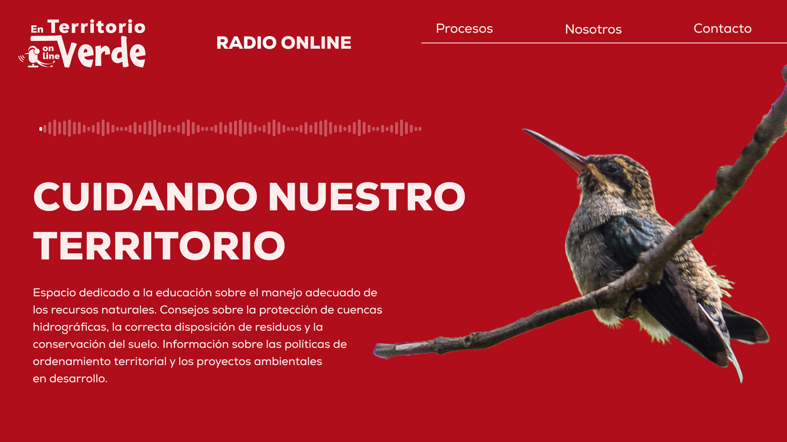
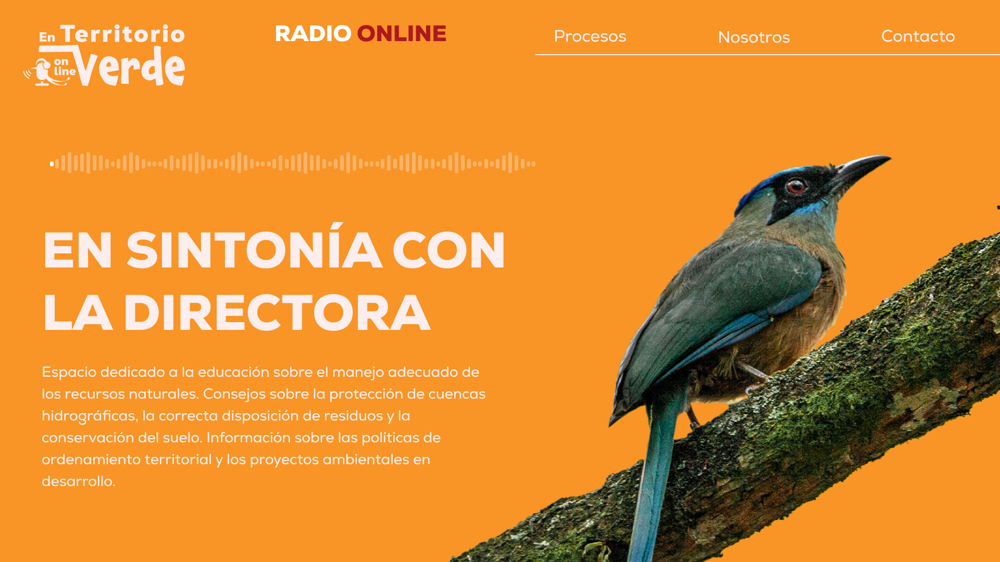
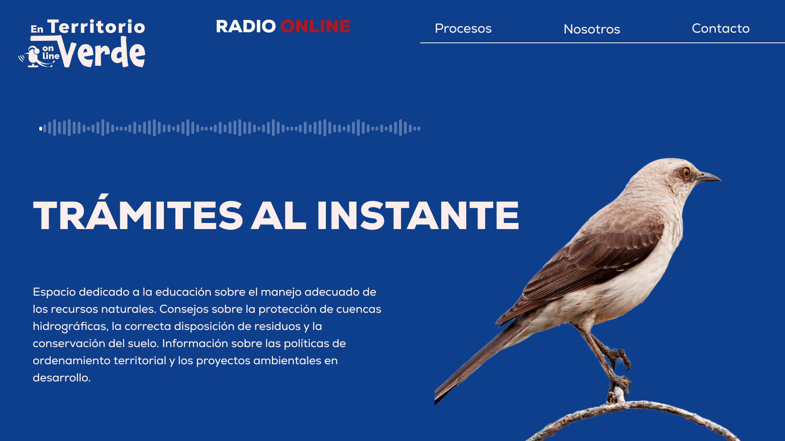

Nuestra Programación
En Territorio Verde ofrece una variada parrilla de programas enfocados en temas ambientales, cultura, participación ciudadana y sostenibilidad. Conéctate y descubre nuestras emisiones diarias.
Parrilla de Emisiones
| Hora | Lunes | Martes | Miércoles | Jueves | Viernes |
|---|---|---|---|---|---|
| 7:00 - 8:00 a.m. | Buenos Días Verde | Buenos Días Verde | Buenos Días Verde | Buenos Días Verde | Buenos Días Verde |
| 8:00 - 9:00 a.m. | Territorio y Comunidad | Voces del Agua | Ambiente y Ciudad | Territorio y Comunidad | Voces del Agua |
| 9:00 - 10:00 a.m. | EcoMúsica | EcoMúsica | EcoMúsica | EcoMúsica | EcoMúsica |
| 10:00 - 11:00 a.m. | Jóvenes por el Cambio | Educación Verde | Jóvenes por el Cambio | Educación Verde | Jóvenes por el Cambio |
| 11:00 - 12:00 m. | Ambiente en Acción | Ambiente en Acción | Ambiente en Acción | Ambiente en Acción | Ambiente en Acción |
Programas Destacados

Buenos Días Verde
Un espacio para comenzar el día con buenas noticias ambientales, música y reflexiones.

Voces del Agua
Historias, retos y soluciones sobre el recurso hídrico y su cuidado en la región.

Ambiente en Acción
Reportajes y entrevistas sobre iniciativas que transforman el entorno desde lo local.